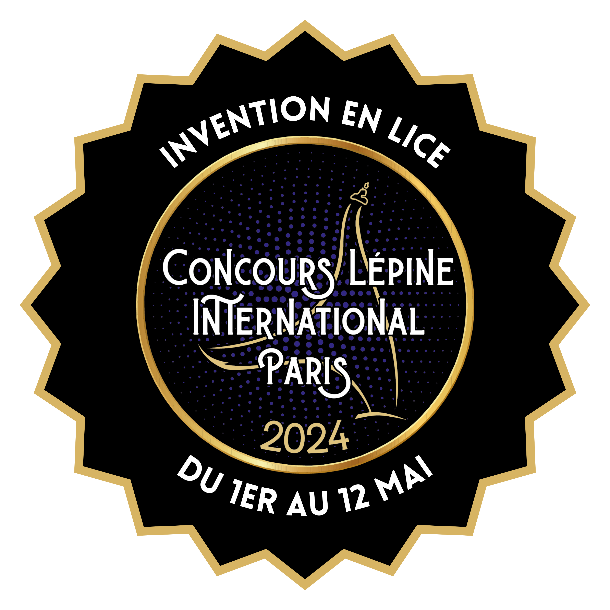
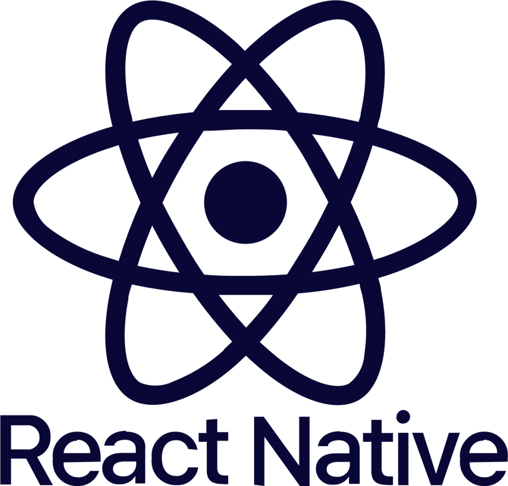
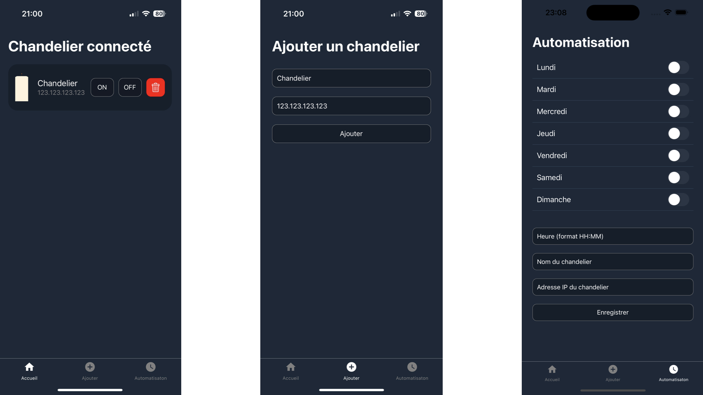

Au cours de mes années de première et terminale au lycée Saint-Joseph Gabarret, j’ai eu l’opportunité de travailler sur un objet innovant : un chandelier connecté. J’ai donc pu faire un vrai travail de recherche et développement, ce qui m’a apporté de précieuses compétences techniques mais également humaines avec un travail poussé en équipe. L’aboutissement de ce projet m'a conduit au concours Lépine 2024. Je vous invite à suivre cette aventure ici.


BONJOUR
Je suis passionné de développement web. Je crée des sites pour en apprendre davantage chaque jour. C'est une expérience enrichissante qui me permet de rester à jour dans ce domaine en constante évolution. Si vous avez des questions ou des sujets particuliers sur lesquels vous souhaitez discuter, n'hésitez pas à les partager !
Chaque jour, je m'investis dans l'apprentissage de nouvelles technologies qui suscitent mon intérêt. Cette quête de connaissances me permet de rester constamment à la pointe des dernières avancées dans le domaine du développement web. En explorant ces nouvelles technologies, j'élargis mes compétences et je découvre des façons innovantes de créer des sites web. Cette démarche d'apprentissage continu me motive et me nourrit intellectuellement, créant ainsi une dynamique positive dans mon parcours de développement professionnel.
COMPÉTENCES
HTML
2021
SCSS
2021
JS
2023
Python
2023
SwiftUI
2024
DEUX DE MES PROJETS


AIM trainer
J'ai développé un entraîneur de visée amusant. Lorsqu'on clique sur une cible, si elle est piégée, une fenêtre pop-up s'affiche.


Application Bougie Connectée
Cette application permet grâce à un système électronique externe de contrôler une bougie à distance (allumage et extinction).